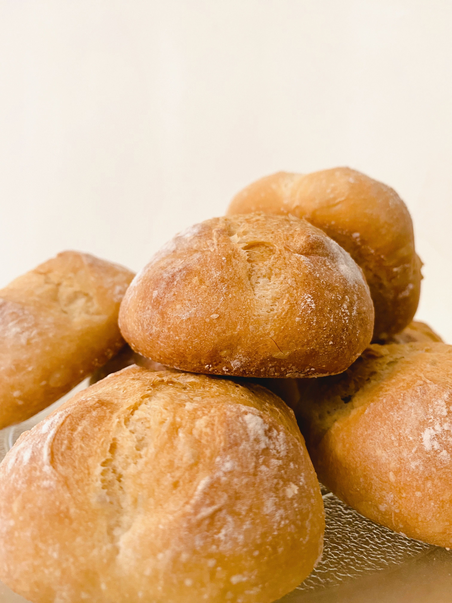

01
FORBEREDELSE
Find materialerne
Det meste findes allerede i dit køkken.
MEL. VAND. LIDT TÅLMODIGHED.
Skab din egen surdej med det, du allerede har i køkkenet. Vi guider dig gennem én lille aktivitet ad gangen.
Du går direkte til guiden. Ingen særlige indkøb, ingen forkundskaber.

HVAD ER SURDEJ?
Surdej er mel og vand, hvor naturlig gær og mælkesyrebakterier får lov at udvikle sig. Med frisk mel og vand holder du kulturen i gang.
Du blander, venter og lærer at lægge mærke til små forandringer. Der er ikke meget aktivt arbejde, men udviklingen tager flere dage og kan tage længere.
Lav din første surdej starter01
FORBEREDELSE
Det meste findes allerede i dit køkken.
02
AKTIVT ARBEJDE
Mel og vand. En kort aktivitet ad gangen.
03
VENTETID + SMÅ AKTIVITETER
Vent, observer og fodr over flere dage.
NÅR DIN SURDEJ ER MODEN

Du skal ikke bage endnu. Første succes er at blande din surdej og vide, hvad du gør bagefter. Når den viser stabil aktivitet, kan du tage næste skridt mod hjemmebag.
Start din første surdej